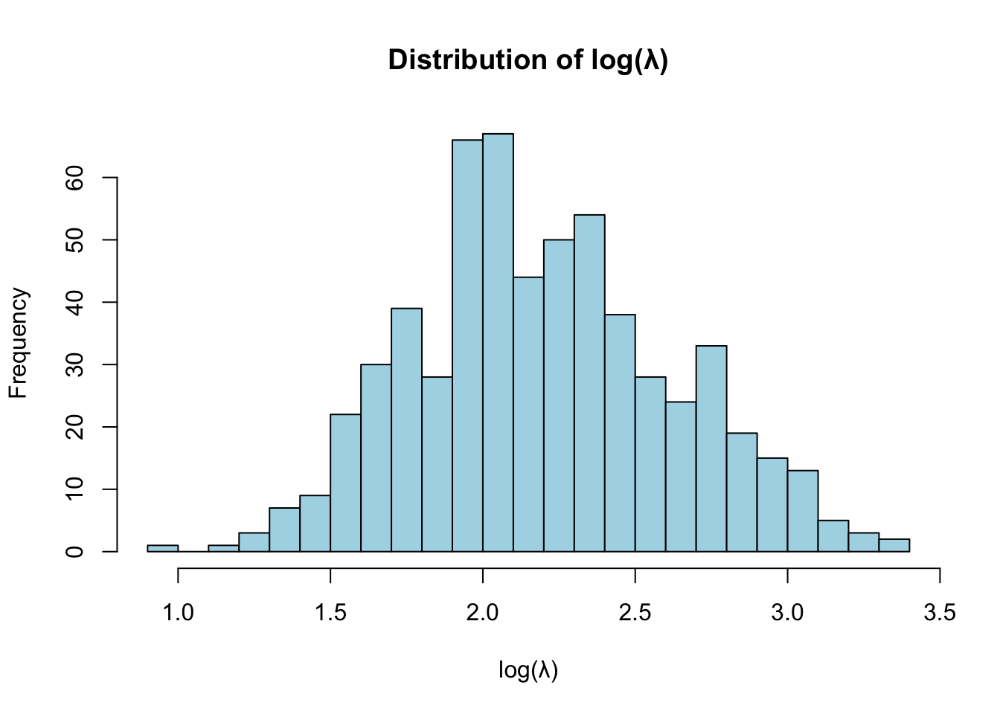
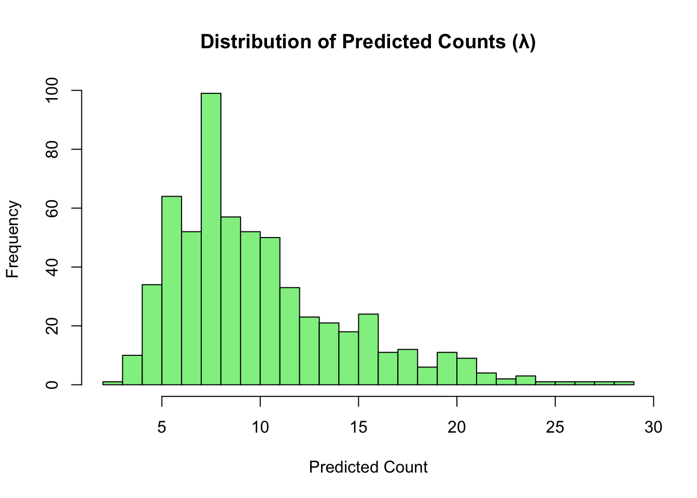

Code
library(MASS)
library(tidyverse)
library(emmeans)
library(ggeffects)
library(easystats)
library(performance)
library(knitr)Princeton University
library(MASS)
library(tidyverse)
library(emmeans)
library(ggeffects)
library(easystats)
library(performance)
library(knitr)library(tidyverse)
data <- read_delim("https://raw.githubusercontent.com/jgeller112/psy504-advanced-stats/main/slides/Poisson/data/2010.csv")naniar package’s function replace_with_nato clean the data.library(naniar)
data_pos <- data %>%
dplyr::select(wwwhr, wordsum, age, sex, reliten, polviews, wrkhome) %>%
replace_with_na(.,
replace = list(wwwhr = c(-1, 998, 999),
wordsum = c(-1, 99),
reliten = c(0, 8, 9),
polviews = c(0, 8, 9),
wrkhome = c(0,8,9),
age=c(0, 98, 99)))Q: Can you explain what might be going on in the above code?
A: Focuses on a subset of columns from the original dataset. Replaces specific “invalid” or “placeholder” values (e.g., -1, 998, 999) with NA to mark them as missing data.
Q: The next step in data cleaning would be to ensure that the data in your code are aligned with the description/ usage context of the variables
data_pos <- data_pos %>%
mutate(
sex = factor(sex, levels = c(1, -1), labels = c("Male", "Female"))
)
# Recode 'reliten' into a factor with meaningful labels
data_pos <- data_pos %>%
mutate(
reliten_recode = factor(reliten, levels = c(1, 2, 3, 4),
labels = c("Extremely important", "Very important",
"Somewhat important", "Not very important"),
ordered = TRUE)
)data_pos %>%
dplyr::select(reliten, reliten_recode)# A tibble: 2,044 × 2
reliten reliten_recode
<dbl> <ord>
1 1 Extremely important
2 4 Not very important
3 1 Extremely important
4 1 Extremely important
5 1 Extremely important
6 4 Not very important
7 3 Somewhat important
8 1 Extremely important
9 1 Extremely important
10 1 Extremely important
# ℹ 2,034 more rowslibrary(skimr)
skimr::skim(data_pos)| Name | data_pos |
| Number of rows | 2044 |
| Number of columns | 8 |
| _______________________ | |
| Column type frequency: | |
| factor | 2 |
| numeric | 6 |
| ________________________ | |
| Group variables | None |
Variable type: factor
| skim_variable | n_missing | complete_rate | ordered | n_unique | top_counts |
|---|---|---|---|---|---|
| sex | 0 | 1.00 | FALSE | 2 | Fem: 1153, Mal: 891 |
| reliten_recode | 99 | 0.95 | TRUE | 4 | Ver: 747, Ext: 707, Not: 363, Som: 128 |
Variable type: numeric
| skim_variable | n_missing | complete_rate | mean | sd | p0 | p25 | p50 | p75 | p100 | hist |
|---|---|---|---|---|---|---|---|---|---|---|
| wwwhr | 996 | 0.51 | 9.79 | 13.41 | 0 | 2 | 5 | 14 | 168 | ▇▁▁▁▁ |
| wordsum | 657 | 0.68 | 6.03 | 2.07 | 0 | 5 | 6 | 7 | 10 | ▁▃▇▅▂ |
| age | 3 | 1.00 | 47.97 | 17.68 | 18 | 33 | 47 | 61 | 89 | ▇▇▇▅▃ |
| reliten | 99 | 0.95 | 2.08 | 1.08 | 1 | 1 | 2 | 3 | 4 | ▇▇▁▂▃ |
| polviews | 71 | 0.97 | 4.08 | 1.46 | 1 | 3 | 4 | 5 | 7 | ▃▂▇▃▅ |
| wrkhome | 882 | 0.57 | 2.26 | 1.72 | 1 | 1 | 1 | 4 | 6 | ▇▁▁▂▁ |
table(data_pos$sex, useNA = "ifany")
Male Female
891 1153 poisson_model <- glm(wwwhr ~ wordsum + age + sex + reliten + polviews + wrkhome,
data = data_pos,
family = poisson)Hint: performance package has the function you’re looking for
# Model checking using the performance package
library(performance)
check_model(poisson_model)
# Find outliers
outliers <- check_outliers(poisson_model)
# View what `outliers` contains
str(outliers) 'check_outliers' logi [1:603] FALSE FALSE FALSE FALSE FALSE FALSE ...
- attr(*, "data")='data.frame': 603 obs. of 4 variables:
..$ Row : int [1:603] 1 2 3 4 5 6 7 8 9 10 ...
..$ Distance_Cook: num [1:603] 0.00844 0.00432 0.00755 0.00247 0.00284 ...
..$ Outlier_Cook : num [1:603] 0 0 0 0 0 0 0 0 0 0 ...
..$ Outlier : num [1:603] 0 0 0 0 0 0 0 0 0 0 ...
- attr(*, "threshold")=List of 1
..$ cook: num 0.892
- attr(*, "method")= chr "cook"
- attr(*, "text_size")= num 3
- attr(*, "influential_obs")='data.frame': 603 obs. of 7 variables:
..$ Hat : num [1:603] 0.01134 0.03224 0.00785 0.00687 0.00503 ...
..$ Cooks_Distance: num [1:603] 0.00844 0.00432 0.00755 0.00247 0.00284 ...
..$ Predicted : num [1:603] 10.21 24.65 8.51 9.97 7.38 ...
..$ Residuals : num [1:603] -2.659 -0.969 -3.277 -1.743 -2.352 ...
..$ Std_Residuals : num [1:603] -2.674 -0.985 -3.29 -1.749 -2.358 ...
..$ Index : int [1:603] 1 2 3 4 5 6 7 8 9 10 ...
..$ Influential : chr [1:603] "OK" "OK" "OK" "OK" ...
..- attr(*, "cook_levels")= Named num 0.892
.. ..- attr(*, "names")= chr "cook"
..- attr(*, "n_params")= int 7
- attr(*, "variables")= chr "(Whole model)"
- attr(*, "raw_data")= tibble [603 × 6] (S3: tbl_df/tbl/data.frame)
..$ wwwhr : num [1:603] 3 20 1 5 2 15 20 14 3 4 ...
..$ wordsum : num [1:603] 6 9 6 6 6 8 10 8 9 7 ...
..$ age : num [1:603] 31 23 31 35 49 35 21 33 53 57 ...
..$ reliten : num [1:603] 1 4 2 2 2 4 4 2 2 1 ...
..$ polviews: num [1:603] 3 2 2 3 5 2 3 4 3 5 ...
..$ wrkhome : num [1:603] 3 4 1 1 1 2 1 1 4 4 ...
- attr(*, "outlier_var")= list()
- attr(*, "outlier_count")=List of 2
..$ cook:'data.frame': 3 obs. of 2 variables:
.. ..$ Row : int [1:3] 72 156 363
.. ..$ n_Cook: chr [1:3] "(Multivariate)" "(Multivariate)" "(Multivariate)"
..$ all :'data.frame': 3 obs. of 2 variables:
.. ..$ Row : num [1:3] 72 156 363
.. ..$ n_Cook: chr [1:3] "(Multivariate)" "(Multivariate)" "(Multivariate)"outlier_ids <- attr(outliers, "outlier_count")$all$Row
# Remove those rows from the original dataset
data_pos_clean <- data_pos[-outlier_ids, ]
# Refit the Poisson model without the outliers
poisson_model_refit <- glm(wwwhr ~ wordsum + age + sex + reliten + polviews + wrkhome,
data = data_pos_clean,
family = poisson)
# Summarize the new model
summary(poisson_model_refit)
Call:
glm(formula = wwwhr ~ wordsum + age + sex + reliten + polviews +
wrkhome, family = poisson, data = data_pos_clean)
Coefficients:
Estimate Std. Error z value Pr(>|z|)
(Intercept) 1.906723 0.082546 23.099 < 2e-16 ***
wordsum 0.100003 0.007761 12.885 < 2e-16 ***
age -0.016446 0.001088 -15.121 < 2e-16 ***
sexFemale -0.261019 0.026403 -9.886 < 2e-16 ***
reliten 0.198362 0.011896 16.675 < 2e-16 ***
polviews -0.035636 0.009684 -3.680 0.000233 ***
wrkhome 0.079194 0.007677 10.316 < 2e-16 ***
---
Signif. codes: 0 '***' 0.001 '**' 0.01 '*' 0.05 '.' 0.1 ' ' 1
(Dispersion parameter for poisson family taken to be 1)
Null deviance: 7663.2 on 600 degrees of freedom
Residual deviance: 6479.8 on 594 degrees of freedom
(1440 observations deleted due to missingness)
AIC: 8530.5
Number of Fisher Scoring iterations: 5model_parameters(poisson_model_refit) %>%
print_html()| Parameter | Coefficient | SE | 95% CI | z | p |
|---|---|---|---|---|---|
| (Intercept) | 1.91 | 0.08 | (1.74, 2.07) | 23.10 | < .001 |
| wordsum | 0.10 | 7.76e-03 | (0.08, 0.12) | 12.88 | < .001 |
| age | -0.02 | 1.09e-03 | (-0.02, -0.01) | -15.12 | < .001 |
| sex (Female) | -0.26 | 0.03 | (-0.31, -0.21) | -9.89 | < .001 |
| reliten | 0.20 | 0.01 | (0.18, 0.22) | 16.67 | < .001 |
| polviews | -0.04 | 9.68e-03 | (-0.05, -0.02) | -3.68 | < .001 |
| wrkhome | 0.08 | 7.68e-03 | (0.06, 0.09) | 10.32 | < .001 |
Hint: performance package has the function you’re looking for
check_overdispersion(poisson_model_refit)# Overdispersion test
dispersion ratio = 14.671
Pearson's Chi-Squared = 8714.618
p-value = < 0.001What do you notice? And what’s a good next step forward? Can there be another model class that can fit the data? If so, fit this model to the data.
The dispersion ratio is very high (14.687), indicating strong overdispersion. This violates the assumptions of the Poisson model. A better model for overdispersed count data is the Negative Binomial model, which accounts for extra variance. I refit the model using glm.nb() from the MASS package.
# Load necessary package
library(MASS)
# Fit a Negative Binomial model to account for overdispersion
nb_model <- glm.nb(wwwhr ~ wordsum + age + sex + reliten + polviews + wrkhome,
data = data_pos_clean)
# Display the summary of the model
summary(nb_model)
Call:
glm.nb(formula = wwwhr ~ wordsum + age + sex + reliten + polviews +
wrkhome, data = data_pos_clean, init.theta = 0.9608344909,
link = log)
Coefficients:
Estimate Std. Error z value Pr(>|z|)
(Intercept) 1.817201 0.276005 6.584 4.58e-11 ***
wordsum 0.109041 0.025967 4.199 2.68e-05 ***
age -0.015821 0.003533 -4.479 7.51e-06 ***
sexFemale -0.170200 0.089437 -1.903 0.0570 .
reliten 0.202860 0.041523 4.885 1.03e-06 ***
polviews -0.034491 0.033143 -1.041 0.2980
wrkhome 0.055261 0.027134 2.037 0.0417 *
---
Signif. codes: 0 '***' 0.001 '**' 0.01 '*' 0.05 '.' 0.1 ' ' 1
(Dispersion parameter for Negative Binomial(0.9608) family taken to be 1)
Null deviance: 767.46 on 600 degrees of freedom
Residual deviance: 669.38 on 594 degrees of freedom
(1440 observations deleted due to missingness)
AIC: 3928.9
Number of Fisher Scoring iterations: 1
Theta: 0.9608
Std. Err.: 0.0593
2 x log-likelihood: -3912.9410 library(performance)
# Compare Poisson (refit) and Negative Binomial models
compare_performance(poisson_model_refit, nb_model)The Negative Binomial model is clearly better based on model comparison: - Much lower AIC (3931.5 vs. 8515.5) - Higher log score and spherical score - Correctly accounts for overdispersion
Zero inflation occurs when a dataset has more zeros than expected under a standard count model like Poisson or Negative Binomial. These “extra” zeros may come from a separate process (e.g., people who never use the internet at all, regardless of predictors).
check_zeroinflation(nb_model)# Check for zero-inflation
Observed zeros: 40
Predicted zeros: 66
Ratio: 1.66The model predicts more zeros (67) than actually observed (40), with a ratio of 1.68 — indicating it’s overfitting zeros.
# Extract log(λ), which is the linear predictor
log_lambda <- predict(nb_model, type = "link")
# Optional: View first few values
head(log_lambda) 1 2 11 20 21 25
2.246158 3.227982 2.202787 2.275211 1.984732 2.818564 # Optional: Plot the distribution
hist(log_lambda, main = "Distribution of log(λ)", xlab = "log(λ)", col = "lightblue", breaks = 30)
# Get the predicted mean count (λ)
mean_count <- predict(nb_model, type = "response")
# Optional: View first few predictions
head(mean_count) 1 2 11 20 21 25
9.451357 25.228696 9.050201 9.729971 7.277096 16.752777 # Optional: Plot the distribution
hist(mean_count, main = "Distribution of Predicted Counts (λ)",
xlab = "Predicted Count", col = "lightgreen", breaks = 30)
We began by fitting a Poisson regression model to predict weekly internet usage (wwwhr). Model diagnostics revealed significant overdispersion (dispersion ratio = 14.687, p < .001), indicating that the Poisson model underestimated variance.
To address this, we refit the data using a Negative Binomial model, which appropriately handles overdispersion. Model comparison showed that the Negative Binomial model had a much lower AIC and better overall fit than the Poisson model.
We also tested for zero inflation. The model was found to overpredict zeros (67 predicted vs. 40 observed), so zero inflation is not a concern. Therefore, a zero-inflated model is not necessary.
In conclusion, the Negative Binomial model is the best-fitting and most appropriate model for this dataset. It provides a more reliable basis for interpreting predictors of internet use.